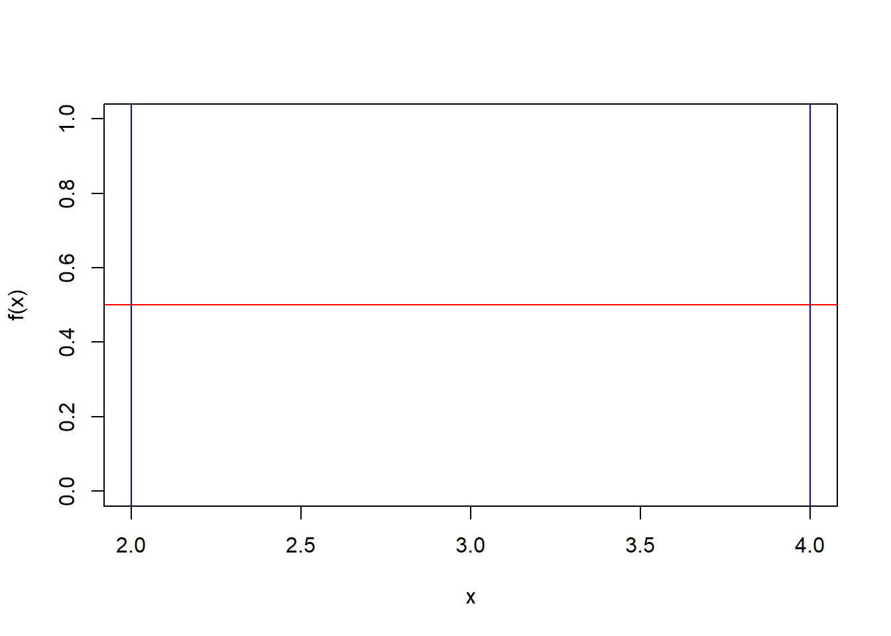

5 Tema 5: Distribuciones Continuas
5.1 Uniforme
Sea \(X\) una v.a, se dice que \(X\sim U(a,b)\), con \(a<b\). Si su función de densidad es:
\[f(x)=\frac{1}{b-a} \hspace{0.5cm}; x \in [a,b]\] Ejemplo,
Sea \(X\) una va, donde \(X\sim U(a=2,b=4)\). Dibuje la función y encuentre las probabilidades de:
- \(P(2<X<3)\)
- \(P(3<X<4)\)
- \(P(X<2.5)\)
Solución,
\[f(x)=\frac{1}{4-2}=\frac{1}{2}=0.5\]

\[\int_{Rx} f(x)dx=\int_2^40.5 dx=0.5 x/_2^4=0.5*(4-2)=0.5*2=1\]
- \(P(2<X<3)=0.5\)
\[P(2<X<3)=\int_2^3 0.5dx=0.5*(3-2)=0.5\]
- \(P(3<X<4)=0.5\)
\[P(3<X<4)=\int_3^4 0.5dx=0.5*(4-3)=0.5\]
- \(P(X<2.5)=0.25\)
\[P(X<2.5)=\int_2^{2.5} 0.5dx=0.5*(2.5-2)=0.5*0.5=0.25\]
Donde;
\[\begin{array}{ll} F(x) & =\frac{x-a}{b-a} \\ E[x] & =\frac{a+b}{2} \\ V[x] & =\frac{(b-a)^2}{12}\\ M_X(t) & = \frac{e^{bt}-e^{at}}{(b-a)*t} \end{array} \]
Demostración,
\[F(t)=P(X<t)=P(X\leq t)=\int_a^t \frac{1}{b-a} dx=\frac{1}{b-a}*x/_a^t=\frac{t-a}{b-a}\] Para una \(x\):
\[F(x)=\frac{x-a}{b-a}\]
\[P(X<2.5)=F(2.5)=\frac{2.5-2}{4-2}=\frac{0.5}{2}=0.25\] \[E[X]=\int_a^b x \frac{1}{b-a} dx=\frac{1}{b-a} \frac{x^2}{2}/_a^b=\frac{b^2-a^2}{2(b-a)}=\frac{(b+a)(b-a)}{2(b-a)}=\frac{a+b}{2}\]
Para la varianza,
\[V(X)=E[X^2]-E[X]^2\]
\[E[X^2]=\int_{Rx} x^2 f(x)dx=\int_a^b x^2 \frac{1}{b-a}dx=\frac{1}{b-a} \frac{x^3}{3}/_a^b=\frac{b^3-a^3}{3(b-a)}=\frac{(b-a)(b^2+ba+a^2)}{3(b-a)}=\frac{b^2+ab+a^2}{3}\]
\[V(X)=\frac{b^2+ab+a^2}{3}-\frac{(a+b)^2}{2^2}=\frac{4b^2+4ab+4a^2-3a^2-6ab-3b^2 }{12}=\frac{b^2-2ab+a^2}{12}=\frac{(b-a)^2}{12}\]
Tarea, demostrar la función generatriz de momentos.
Ejemplo,
- Un punto es escogido al azar en el segmento de recta \([1,4]\). Calcular:
- La probabilidad de que el punto escogido esté entre 2 y 3
- la probabilidad de que sea igual a 2 (\(P(X=2)=0\))
- la media (esperanza) y la varianza
Solución, sea X una va, \(X\sim U(a=1,b=4)\). \(f(x)=\frac{1}{b-a}=\frac{1}{3}\)
\[P(2<X<3)=F(3)-F(2)=\int_2^3\frac{1}{3}dx=\frac{1}{3}\]
\[P(X=2)=0\] \(E[X]=\frac{a+b}{2}=5/2=2.5\), \(V(X)=\frac{(b-a)^2}{12}=\frac{(4-1)^2}{12}=9/12=3/4\)
- (TAREA) La clase de un profesor esta programada para comenzar a las 10:00 am; pero él comienza su clase en un tiempo \(X\) que tiene distribución uniforme en el intervalo de 9:55 am. a 10:05 am. ¿Cuál es la probabilidad de que él comience su clase:
- hasta 2 minutos más temprano?
- hasta 2 minutos más tarde?
Solución, X: El inicio de la clase, \(X_1\sim U (0,10)\), \(X_2\sim U(-5,5)\)
- hasta 2 minutos más temprano?
- A lo sumo 2 minutos más temprano?
\[P(-2<X_2<0)\] \[P(-5<X_2<2)\]
5.2 Exponencial
Sea \(X\) una v.a, se dice que \(X\sim exp(\lambda)\), con \(\lambda>0\) . Si su función de densidad es: \[f(x)= \lambda e^{-\lambda x} \hspace{0.5cm}; x>0\] Donde;
\[\begin{array}{ll} F(x) & = 1- e^{-\lambda x} \\ E[x] & =\frac{1}{\lambda}\\ V[x] & =\frac{1}{\lambda^2}\\ M_X(t) & = \frac{\lambda}{\lambda-t} \hspace{0.5cm}; t<\lambda \end{array} \]
Demostrando algunas propiedades,
\[\int_{Rx}f(x)dx=\int_0^{\infty}\lambda*e^{-\lambda x}dx=\lambda \int_0^{\infty}e^{-\lambda x}dx=\lambda \left(- \frac{e^{-\lambda x}}{\lambda} \right)/_0^{\infty}=-e^{-\infty}+e^0=-0+1=1\]
\[M_X(t)=E[e^{tx}]=\int_0^{\infty} e^{tx}\lambda e^{-\lambda x}dx=\lambda \int_0^{\infty} e^{-x(\lambda-t)} dx=\lambda \left( -\frac{e^{-x(\lambda-t)}}{(\lambda-t)} \right)_0^{\infty}=\frac{\lambda}{(\lambda-t)}*(-e^{-\infty (\lambda-t)}+e^0)=\frac{\lambda}{\lambda-t}\] Esto se da, siempre y cuando \(\lambda-t>0\), \(\lambda>t\)
A partir de la función generatriz de momentos, encontrar a \(E[X]\).
\[E[X]=M'_X(t=0)=\left(\frac{\lambda}{\lambda-t}\right)_{(t=0)}'= \frac{\lambda}{(\lambda-t)^2}=_{(t=0)} \frac{1}{\lambda}\] \[E[X]=\int_0^\infty x \lambda e^{-\lambda x }dx \]
\[E[X^2]=\int_0^\infty x^2 \lambda e^{-\lambda x }dx \]
Tarea, demostrar la \(V(X)\) a partir de la función generatriz de momentos.
5.2.1 Ejercicios,
- (pg525, 2) Suponga que un mecanismo eléctrico tiene un tiempo de vida \(X\) (en unidades de 1000 horas) que es considerado como una v.a. continua con función de densidad exponencial (\(\lambda=1\)).
Suponga que el costo de fabricación de un item es 2 Bs. y el precio de venta es 5 Bs. El fabricante garantiza la total devolución si \(x\leq 0.9\) ¿Cuál es la ganancia esperada por item?.
Solución, \(X\sim exp(\lambda=1)\).
\[P(devolucion)=P(X\leq 0.9)=F(0.9)=1-e^{-0.9}=0.5935\] \[P(\sim devolucion)=1-P(X\leq 0.9)=0.4065\] Imaginemos las ganancias:
\[Ganancia=PrecioVenta-CostoProduccion=5-2=3\] Dado que existe una garantía de devolución asociada al comportamiento del tiempo de vida del mecanismo electrónico y este es una variable aleatoria, entonces las ganancias también son aleatorias.
\[GananciaEsperada_{item}=5*Pr(\sim devolucion)-2=5*0.4065-2=0.0325 Bs.\] Se planea vender 3500 items de este mecanismo electrónico, ¿Cuál sera la ganancia esperada de este lote de 3500 items?.
Resp. la ganancia esperada será de \(3500*0.0325=113.75\)
- (pg525, 1) La duración de una lampara se distribuye exponencial con parámetro \(\lambda=1/100\) (horas). Determinar:
- La probabilidad de que se queme antes de las 1000 horas
- La probabilidad de que se queme después de la duración media
- ¿Cuál es la desviación estándar de la distribución?
Solución, sea \(X\) la va, que denota la duración en horas. \(X\sim exp(\lambda=1/100)\).
\[f(x)=\frac{1}{100}e^{-\frac{1}{100}x}; \text{ } x>0\] \[F(x) =P(X<x) = 1- e^{-\frac{1}{100} x}\] La probabilidad de que se queme antes de las 1000 horas
\[P(X<1000)=F(1000)=1-e^{-1000/100}=1-e^{-10}=0.9999546\]
La probabilidad de que se queme después de la duración media.
\[E[X]=\frac{1}{\lambda}=\frac{1}{\frac{1}{100}}=100\]
\[P(X>E[X])=P(X>100)=1-P(X\leq 100)=1-F(100)=1-(1-e^{-100/100})=\] \[=1-1+e^{-1}=e^{-1}=0.3679\] ¿Cuál es la desviación estándar de la distribución? \(\sqrt{V(X)}\)
\[\sqrt{V(X)}=\sqrt{\frac{1}{\lambda^2}}=1/\lambda=100\]
- Supongamos que el número de kilómetros que un carro puede recorrer antes que su batería se consuma, está exponencialmente distribuida con un promedio de 15000 kilómetros. Si una persona desea hacer una excursión de 10000 kilómetros. ¿Cuál es la probabilidad de que la persona complete la excursión sin que tenga que cambiar de batería del carro?.
Solución, sea \(X\) la duración de la batería en kilómetros. \(X\sim exp(\lambda=1/15000)\). \(E[X]=15000=1/\lambda\), entonces, \(\lambda=1/15000\).
\[P(X>10000)=tarea\]
5.3 Distribución Gamma
Función Gamma (\(\Gamma\))
\[\Gamma(\alpha)=\int_0^\infty x^{\alpha-1} e^{-x}dx\]
Esta función Gamma \(\Gamma(.)\) es finita cuando \(\alpha>0\).
Propiedades de la función Gamma
- \(\Gamma(1)=\int_0^\infty e^{-x}dx=1\)
- Si tenemos \(n=1,2,\ldots\). Así \(\Gamma(n)=(n-1)!\)
- \(\Gamma(1/2)=\sqrt{\pi}\)
Ejemplos
- \(\Gamma(2)=(2-1)!=1!=1\)
- \(\Gamma(3)=(3-1)!=2!=2\)
- \(\Gamma(10)=(10-1)!=9!=362880\)
Se dice que la va \(X\) tiene una distribución gamma \(X\sim Gamma(\alpha,\beta)\), con \(\alpha>0\), \(\beta>0\). Si su función de densidad esta dada por:
\[f(x)=\frac{\beta^\alpha x^{\alpha-1}}{\Gamma(\alpha)} e^{-\beta x}\]
Para \(x>0\).
Nota, con \(\alpha=1\) la función queda como:
\[f(x)=\beta e^{-\beta x}\] Así \(Gamma(\alpha=1,\beta)=exp(\lambda=\beta)\)
Recordar que para la exponencial, la variable aleatoria \(X\) era el tiempo de espera de Un suceso con tasa de espera \(\lambda\), la distribución Gamma es una generalización donde \(X\) se puede entender como el tiempo de espera de varios \(n\) sucesos. En esta idea \(\beta\) es similar a \(\lambda\) con el objetivo de modelar la tasa de espera, \(\alpha\) modela el número de sucesos (n).
Veamos si es una función de probabilidad,
\[\int_{0}^\infty \frac{\beta^\alpha x^{\alpha-1}}{\Gamma(\alpha)} e^{-\beta x} dx=\frac{\beta^\alpha }{\Gamma(\alpha)} \int_{0}^\infty x^{\alpha-1} e^{-\beta x} dx= \]
Aplicando un cambio de variable \(y=\beta x\), \(\frac{dy}{dx}=\beta\), \(x=y/\beta\)
\[=\frac{\beta^\alpha }{\Gamma(\alpha)} \int_0^\infty \left(\frac{y}{\beta}\right)^{\alpha-1} e^{^-y}\frac{dy}{\beta}=\frac{\beta^\alpha }{\Gamma(\alpha) \beta^\alpha} \int_0^\infty y^{\alpha-1}e^{-y}dy = \frac{\beta^\alpha \Gamma(\alpha)}{\Gamma(\alpha) \beta^\alpha}=1\] Propiedades, si \(X\sim Gamma(\alpha, \beta)\), entonces:
\(E[X]=\frac{\alpha}{\beta}\)
\(V(X)=\frac{\alpha}{\beta^2}\)
\(M_X(t)=\left(\frac{\beta}{\beta-t}\right)^\alpha\), para \(t<\beta\)
Si las variables aleatorias \(X_1, X_2, \ldots, X_k\) son independientes y si cada \(X_i\sim exp(\lambda)\), entonces, la suma \(X_1+X_2+_\ldots+X_k \sim Gamma(\alpha=k,\beta=\lambda)\).
Ejercicio,
Supongamos que la vida en años de hombres residentes en un país dado tiene distribución gamma con parámetros \(\alpha=2\) y \(\beta=0.02\). ¿Qué proporción de hombres residentes de dicho país vivirán más de 50 años?
Solución, \(X\sim Gamma(\alpha=2,\beta=0.02)\), se pide \(P(X>50)\), la función de probabilidad es:
\[f(x)=\frac{0.02^2 x}{\Gamma(2)} e^{-0.02 x}=0.0004 x e^{-0.02x} \]
\[P(X>50)=\int_{50}^\infty 0.0004 x e^{-0.02x} dx=0.7358 \]
\[P(X>50)=1-P(X\leq 50)=1-\int_{0}^{50} 0.0004 x e^{-0.02x} dx= 1-0.2642=0.7358 \]
Encontrar el valor esperado y la desviación estandar
\[E[X]=\frac{2}{0.02}=100\] \[V(X)=\frac{2}{0.0004}=5000\] Asi, \(\sqrt{V(X)}=70.71\)
5.4 Normal
Sea \(X\) una v.a, se dice que \(X\sim N(\mu,\sigma^2)\), \(\sigma>0\), si su función de densidad es: \[f(x)=\frac{1}{\sqrt{2\pi} * \sigma} e^{-\frac{1}{2} \left( \frac{x-\mu}{ \sigma}\right)^2 } \hspace{0.5cm}; -\infty \leq x \leq \infty\] Donde;
\[\begin{array}{ll} E[x] & =\mu\\ V[x] & =\sigma^2\\ M_X(t) & = e^{\mu t +\frac{1}{2} \sigma^2 t^2} \end{array} \]

## [1] 49.354## [1] 50.3Comentarios,
- El 68.2% de la probabilidad se concentra en:
\[P(\mu-\sigma<X<\mu+\sigma)=0.682\]
\[P(\mu-2\sigma<X<\mu+2\sigma)=0.954\]
\[P(\mu-3\sigma<X<\mu+3\sigma)=0.997\]
Nota: La distribución normal es una de las más importantes en la estadística, sin embargo, la forma de la distribución es compleja al momento de querer obtener las probabilidad de forma formal, esto debido a problemas de integración.
Ejemplo, sea \(X\sim N(\mu=0,\sigma=1)\), encontrar, \(P(X>0.5)\).
\[f(x)=\frac{1}{\sqrt{2\pi}} e^{-\frac{1}{2} x^2 } \hspace{0.5cm}; -\infty \leq x \leq \infty\]
\[P(X>0.5)=\int_{0.5}^\infty \frac{1}{\sqrt{2\pi}} e^{-\frac{1}{2} x^2 } dx=\frac{1}{\sqrt{2\pi}} \int_{0.5}^\infty e^{-\frac{1}{2} x^2 } dx \]
5.4.1 Estandarización de las variables (transformación)
La estandarización de una variable aleatoria \(X\) parte por una transformación que incluye su esperanzan y su varianza, sea \(z\) una variable aleatoria, resultante de aplicar la estadanrización a la variable \(x\), \(z\) esta definida como:
\[z_i=\frac{x_i-E[X]}{\sqrt{V(x)}}\]
\[z_i=\frac{x_i-\bar{x}}{\sigma_x}\] Propiedades de \(z\):
- \(E[Z]=0\)
- \(V(Z)=1\)
5.5 Normal Estándar
Sea \(x \sim N(\mu, \sigma^2)\), entonces \(z=\frac{x-\mu}{\sigma}\) es una v.a, y se dice que \(Z\sim N(0,1)\) es una normal estándar, si su función de densidad es: \[f(z)=\frac{1}{\sqrt{2\pi}} e^{-\frac{1}{2} z^2 } \hspace{0.5cm}; -\infty \leq z \leq \infty\] Donde;
\[\begin{array}{ll} E[z] & =0\\ V[z] & =1\\ M_Z(t) & = e^{\frac{1}{2} t^2} \end{array} \] ### Ejercicios
\[P(0<Z<1)=0.3413\]
\[P(Z\leq t)=P(Z<t)=F(t)=\phi(t)\] ### Propiedades
- \(P(a<Z<b)=F(b)-F(a)=\phi(b)-\phi(a)\), \(a<b\)
- \(P(Z>a)=1-P(Z\le a)=1-F(a)=1-\phi(a)\)
- \(P(Z<b)=F(b)=\phi(b)\)
5.5.1 Otros ejemplos
Sea \(Z\sim N(0,1)\), calcular:
\(P(Z>0)=0.5\)
\(P(Z>3)=1-\phi(3)=1-0.9987=0.0013\)
\(P(Z<2)=\phi(2)=0.9772\)
\(P(Z<-2)=\phi(-2)=0.028\)
\(P(-1.5<Z<0)=\phi(0)-\phi(-1.5)=0.5-0.0668=0.4332\)
Si \(Z\) en una va. \(Z\sim N(0,1)\), calcular:
- \(P(0<Z<1.44)=F(1.44)-F(0)=\phi(1.44)-\phi(0)=0.9251-0.5=0.4251\)
- \(P(-0.85<Z<0)=\phi(0)-\phi(-0.85)=0.5-0.1977=0.3023\)
- \(P(-1.48<Z<2.05)=\phi(2.05)-\phi(-1.48)=0.9798-0.0694=0.9104\)
- \(P(Z<1.08)=F(1.08)=\phi(1.08)=0.8599\)
- \(P(Z>-0.66)=1-P(Z\leq -0.66)=1-\phi(-0.66)=1-0.2566=0.7434\)
Tarea: Revisar los ejercicios a partir de la página 511
5.5.2 Otro propiedad
\[P(-1<Z<1)=0.682\]
\[P(-2<Z<2)=0.954\]
\[P(-3<Z<3)=0.997\] 2. Si \(X\sim N(\mu=54,\sigma=10)\), calcular:
- \(P(X>54)=P(\frac{X-\mu}{\sigma} > \frac{54-54}{10})=P(Z>0)=1-\phi(0)=1-0.5=0.5\)
- \(P(X>60)=P(\frac{X-\mu}{\sigma}>\frac{60-54}{10})=P(Z>0.6)=1-\phi(0.6)=1-0.7257=0.2743\)
- \(P(X<45)=P(Z<\frac{45-54}{10})=P(Z<-0.9)=\phi(-0.9)=0.1841\)
- \(P(47<X<62)=P(\frac{47-54}{10}<\frac{X-\mu}{\sigma}<\frac{62-54}{10})=P(-0.7<Z<0.8)\)
\(P(-0.7<Z<0.8)=\phi(0.8)-\phi(-0.7)=0.7881-0.2420=0.5461\)
- Si \(X\sim N(\mu=1,\sigma^2=4)\). Calcular:
\(P(X\leq 3)=P(\frac{X-\mu}{\sigma} \leq \frac{3-1}{2})=P(Z\leq 1)=F(1)=\phi(1)=0.8413\)
\(P(X>1.5)=P(\frac{X-\mu}{\sigma}>\frac{1.5-1}{2})=P(Z>0.25)=1-P(Z\leq 0.25)\) \(=1-P(Z\leq0.25)=1-\phi(0.25)=1-0.5987=0.4013\)
\(P(2<X<5)=P(\frac{2-1}{2}<Z<\frac{5-1}{2})=P(0.5<Z<2)=\phi(2)-\phi(0.5)=0.9772-0.6915=0.2857\)
\(P(-1<X<0.5)=P(\frac{-1-1}{2}<Z< \frac{ 0.5-1}{2})=P(-1<Z<-0.25)\)
\(=\phi(-0.25)-\phi(-1)=0.4013-0.1587=0.2426\)
- Los pesos de 600 estudiantes están normalmente distribuidos con media 65.3 Kg y desviación estándar de 5.51 Kg. Encuentre el número de alumnos que pesan:
- entre 60 y 70 kg
- más de 63.2
- entre 55 y 60 Kg
Solución, \(X\sim N(\mu=65.3,\sigma=5.51)\)
- \(P(60<X<70)=P(-0.962<Z<0.853)=\phi(0.85)-\phi(-0.96)=0.8023-0.1685=0.6338\)
Dado que hay 600 estudiantes de estos la probabilidad que pesen entre 60 y 70 es de 0.6338 que representa a \(600*0.6338=380\) estudiantes.
- \(P(X>63.2)=P(Z>-0.38)=1-P(Z\leq -0.38)=1-\phi(-0.38)=1-0.3520=0.648\)
En personas esto equivale a \(600*0.648=389\)
- \(P(55<X<60)=P(-1.87<Z<-0.96)=\phi(-0.96)-\phi(-1.87)=0.1685-0.0307=0.1378\)
En personas esto equivale a \(600*0.1378=83\)
5.5.3 Propiedades sobre la normal
Teorema de la suma de normales independientes
Sea \(X_1, X_2, \ldots ,X_k\) va independientes y que cada una de ellas \(X_i\sim N(\mu_i,\sigma^2_i)\). Entonces la suma de estas \(k\) variables también se distribuye normal.
\[X_1+X_2+\ldots+X_k=Y\sim N \left(\mu_y=\mu_1+\mu_2+\ldots+\mu_k,\sigma^2_y=\sum_{i=1}^k{\sigma_i^2} \right) \] > Teorema del limite central
Si \(X_1, X_2, \ldots,X_n,\ldots\) es una sucesión de va independientes e idénticamente distribuidas (iid). Cada una con media \(E[X_i]=\mu\) y varianza \(V(X_i)=\sigma^2\) (finita). Entonces para cualquier número fijo \(x\) se tiene:
\[lim_{(n\rightarrow +\infty)} P\left(\frac{\bar{X_n}-\mu}{\sigma/\sqrt{n}}\leq x \right)=P(Z_n<x)=\phi(x)\] \[Z_n\sim N(0,1)\] Donde,
\[\bar{X}_n=\frac{\sum_{i=1}^n X_i}{n}\]
Ejemplo (Pg 518, ej 41.). Un fabricante de papel de embalar requiere resistencia mínima de 20 kilos por centímetro cuadrado. Para verificar la calidad del papel, cada hora se selecciona una muestra de 10 piezas de papel y se mide la resistencia de cada una de ellas. Se identifica que el promedio de la resistencia es de 21 kilos por centímetro cuadrado y la desviación estándar es de 2 kilos por cm2.
¿Cuál es la distribución aproximadamente de la media muestral de las \(n=10\) piezas de papel.
¿Cuál es la probabilidad de que para una muestra aleatoria de \(n=10\) piezas de papel sea \(\bar{X}<20\)?
Solución, Sea \(X_i\): Resistencia del papel \(i\) una va para \(i=1, 2, \ldots\). \(X_i \sim .(\mu=21,\sigma=2)\)
- La distribución de la media muestral se la puede aproximar mediante la distribución normal por el teorema del limite central.
\[\bar{X}_{10}\sim N(\mu=21,\sigma=2/\sqrt{10})=N(\mu=21,\sigma=0.63)\] b) \(P(\bar{X}<20)=P(Z_{10}<\frac{20-21}{0.63})=P(Z<-1.58)=\phi(-1.58)=0.0571\)